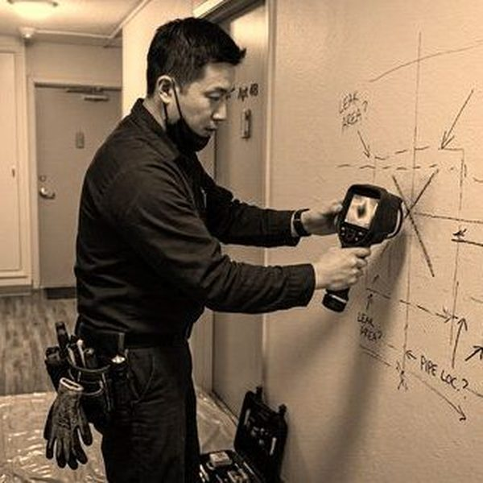
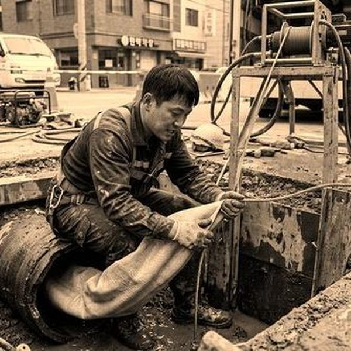
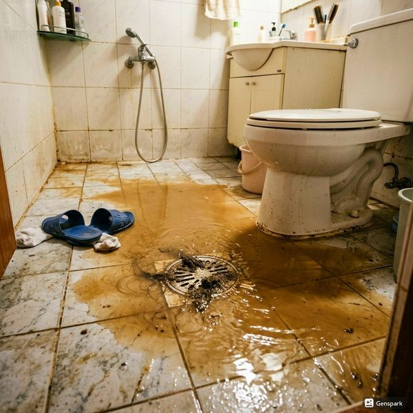

연립·다세대 하수관의 특수성
연립주택과 다세대 주택은 아파트와 달리 관리사무소가 없어 배관 관리가 소홀해지기 쉽습니다. 하수관은 세대별 전용 배관과 건물 공용 배관(수직관, 옥외 배관)으로 구분되는데, 공용 배관에 문제가 생기면 모든 세대에 영향이 미칩니다. 특히 저층 세대에서 역류나 악취가 발생하는 경우가 많은데, 이는 상층 세대의 사용 습관(기름 투입, 이물질 배출 등)이 원인인 경우가 흔합니다. 공용 배관 관리 비용은 세대별 분담이 원칙이지만, 명확한 합의가 없으면 분쟁으로 이어집니다.

효과적인 공동 관리 방법
가장 좋은 방법은 입주자 간 배관 관리 규약을 만들고, 분기 또는 반기별로 전문 업체의 정기 점검을 받는 것입니다. 비용은 세대수로 균등 분할하되, 1층 상가가 있는 경우 업종 특성(음식점 등)에 따라 차등 부담하는 것이 합리적입니다. 제우스시설관리는 연립·다세대 전문 배관 정기 관리 프로그램을 운영합니다. 고압세척을 통한 배관 청소, CCTV 내시경 점검, 트랩 관리를 한 번에 처리하며, 세대당 비용을 크게 절감할 수 있습니다. 입주자 대표에게 관리 보고서를 제공하여 투명한 관리가 가능합니다. 28분 내 긴급 출동도 지원합니다.

자주 묻는 질문
Q. 공용 배관 수리비를 특정 세대에게만 청구할 수 있나요?
A. 원인 제공자가 명확한 경우(이물질 투입 등) 해당 세대에 비용을 청구할 수 있지만, 노후화의 경우 공동 부담이 원칙입니다.
Q. 관리 규약은 어떻게 만드나요?
A. 제우스시설관리에서 표준 배관 관리 규약 양식을 무료로 제공해 드리며, 건물 특성에 맞게 수정하여 사용하실 수 있습니다.